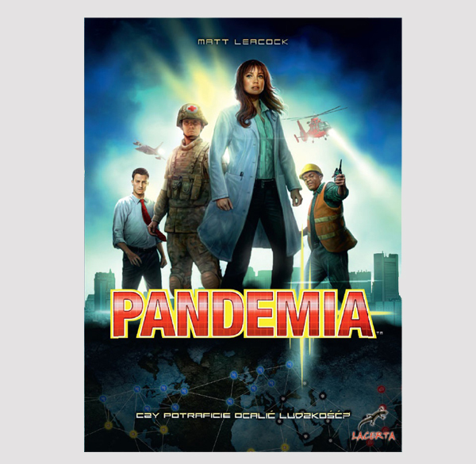
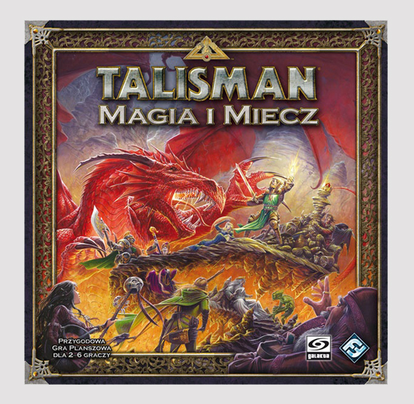

Planszówki to przede wszystkim rozrywka kojarząca się z klasycznym wysilaniem komórek mózgowych przy szachach, rodzinne kłótnie podczas Monopoly albo trening dedukcji w Cluedo. Jednak nowoczesne gry to znacznie więcej niż tylko plansza, pionki i kostki. Rynek ten rozwija się bardzo prężnie – co roku wydawanych jest ponad 500 nowych tytułów, co można zauważyć w dowolnej księgarni czy sklepie hobbystycznym. Dzięki stałej obecności gier na rynku, nie tylko zdobywają one coraz liczniejszą grupę fanów, ale również zajmują stałe miejsce w świadomości osób niegrających.
Poniżej zaprezentowałem 7 gier planszowych, które moim zdaniem są godne uwagi. Świetnie nadają się na prezent, jeżeli szukacie jakiegoś pomysłu. Każdą grę krótko scharakteryzowałem, więcej szczegółowych informacji uzyskacie - klikając na pudełko. Zapraszam na przegląd...
WSIĄŚĆ DO POCIĄGU
Wsiąść do pociągu: Europa, to polska wersja znanej i lubianej gry Ticket to Ride: Europe (która z kolei jest rozwinięciem światowego hitu Ticket to Ride). Polska wersja brzmi dumnie, jednak cała „polskość” sprowadza się do przetłumaczonej instrukcji, gdyż sama gra jest całkowicie niezależna językowo. Elementy jakimi gracze posługują się w trakcie rozgrywki nie mają na sobie żadnych napisów, do których trzeba by było znać jakiś konkretny język.To świetna gra familijna przeznaczona dla 2 do 5 graczy, których zadaniem jest zbudowanie tras kolejowych, łączących miasta europejskie.
PLUSY: Proste i zdrozumiałe zasady, dynamiczna rozgrywka oraz ładnie wykykonana grafika.
MINUSY:Z czasem powtarzające się bilety nudzą się.
CZAS ROZGRYWKI:dla 2 osób ok. 30 minut; 5 osób ok.1,5h.
CENA:ok.120-150 złotych.
PANDEMIA

Jako że nie wypada ze sobą rywalizować w obliczu zbliżającej się katastrofy, gra „Pandemia” należy do gatunku kooperacyjnych. Podczas rozgrywki każdy z graczy wciela się w różnej maści specjalistów, którzy dzięki swoim unikalnym umiejętnościom starają się wspólnie stawić czoło rozprzestrzeniającym się na wielką skalę chorobom. Wszyscy uczestnicy rozgrywki muszą ze sobą wpółpracować, bo albo wszyscy poniosą klęskę, albo wspólnymi siłami pokonają grę.
PLUSY: Zdrozumiałe zasady, dynamiczna rozgrywka, kooperacja graczy.
MINUSY:Powtarzalność wykonywanych czynności, może z czasem irytować.
CZAS ROZGRYWKI:dla 2 osób ok. 75 minut; 4 osób ok.2,5h.
CENA:ok.100-130 złotych.
SMALL WORLD
Moja ulbiona planszówka... „Small world” to gra o uniwersum, który chyli się ku upadkowi i w którym trwa nieustająca walka o byt coraz to nowszych ras napływających do krainy. Gracze mają okazję dowodzić różnymi maszkaronami i starają się zawojować nimi świat. Niestety, jak to z cywilizacjami często bywa, mają swoje złote ery, a im potężniejsze, tym głośniejszy huk przy ich upadku. W tych okolicznościach trzeba wyczuć moment i w odpowiednim czasie porzucić rasę na rzecz innej.
PLUSY: Proste zasady, szybka rozgrywka, duża grywalność.
MINUSY:Jeszcze nie znalazłem.
CZAS ROZGRYWKI:dla 2 osób ok. 30 minut; 5 osób ok.1,5h.
CENA:ok.130-160 złotych.
MEMOIR`44
Jest lato 1944. Żołnierze alianccy szykują się na podbój okupowanej przez hitlerowców Europy. Pierwszym celem: ufortyfikowana Normandia. To tam właśnie graczom przyjdzie mierzyć się ze sobą w serii bitew, które zdecydują o losach II wojny światowej.
Gra przypomina najlepsze tradycje strategicznych planszówek opartych na heksach, stanowiących podstawową jednostkę terenu na placu boju. Ten ostatni jest urozmaicony. W zależności od rozgrywki możemy napotkać plaże, góry, lasy, rzeki, mosty, czy też jedną z form terenu charakterystyczną dla północnej Francji, dość niefortunnie opisaną jako żywopłot. Wszystko to powoduje, że rozgrywka jest dynamiczna, a ukształtowanie terenu potrafi mieć daleko idące konsekwencje dla przebiegu rozgrywki. Piechocie zawsze łatwiej będzie się bronić w lesie, a wojskom pancernym bardzo trudno będzie opanować miasto.
PLUSY: Proste zasady,scenariusze kampanii,rozwija umiejętności myślenia strategicznego.
MINUSY:Cena, gra raczej dla dwóch graczy, ktoś musi grać Niemcami.
CZAS ROZGRYWKI:dla 2 osób - ok. 2 godzin.
CENA:ok.150-200 złotych.
TALISMAN MAGIA I MIECZ

Klasyka gatunku, gra epicka w której gracze wcielają się w poszukiwaczy przygód walczących o zdobycie legendarnej Korony Władzy i przejęcia kontroli nad światem.Świat gry składa się z trzech krain, od największej Zewnętrznej, przez średnią, nieco trudniejszą, ale też bardziej opłacalną Środkową, aż do stawiającej przed graczem same wyzwania Wewnętrznej, w której centrum znajduje się Korona Władzy. Gracze na przemian poruszają swoich (losowo wybranych z dostępnej puli) poszukiwaczy – ruch odbywa się w oparciu o rzut kostką – dostosowując się do zasad pola, na którym wylądowali. Niektóre pola oferują specjalne zasady (np. w gospodzie można się spić lub wygrać w karty), a na większości gracze ciągną tzw. karty przygód. Symbolizują one znalezione przedmioty i sojuszników, losowe wydarzenia, jak również wrogów, którymi trzeba stoczyć bój. W miarę podróży i kolejnych walk postacie stają się coraz bardziej potężne, poszukują też tytułowego Talizmanu, który jest niezbędny do zdobycia Korony Władzy.
PLUSY:Zrozumiałe zasady, dla 2 do 7 graczy, liczne dodatki
MINUSY:Gra pochłaniająca ogromną ilość czasu.
CZAS ROZGRYWKI:dla 2 osób - ok. 2-3 godzin.
CENA:ok.130-160 złotych.
WŁADCY PODZIEMI
W grze Władcy Podziemi musisz kopać tunele, wydobywać złoto, najmować potwory, tworzyć pułapki i zajmować się wszystkimi rzeczami, które są potrzebne w porządnych podziemiach. Nie jest to łatwe zadanie, ponieważ konkurencja nie śpi i czasami trzeba wykazać się odrobiną nikczemności, żeby osiągnąć swój cel - a im bardziej zły jesteś, tym silniejsi poszukiwacze przygód chcą odwiedzić i zniszczyć stworzone przez ciebie podziemia. Na koniec otrzymujesz punkty w oparciu o swoje osiągnięcia: budowę i obronę lochów, a czasami także za zdobycie prestiżowych tytułów.
PLUSY:Świetnie obmyślona mechanika gry, elementy strategii, humor.
MINUSY:Masa znaczników, kilkustronnicowa instrukcja, początkowo przytoczenie zasadami.
CZAS ROZGRYWKI:dla 2 osób - ok. 2 godzin.
CENA:ok.120-160 złotych.
7 cudów świata

7 Cudów Świata to gra, w której każdy z graczy posiada pewien zestaw kart, z którego wybiera jedną, by resztę przekazać sąsiadującemu graczowi. Gra składa się z 3 er, podczas których rozbudowujemy swoje miasto wznosząc kolejne budynki i kolejne poziomy naszego "cudu". Na koniec wygrywa osoba o większej ilości punktów zwycięstwa.
PLUSY:Dynamiczna akcja, duża grywalność, szybka rozgrywka.
MINUSY:Cena, wykonanie kart-szybko niszczą się.
CZAS ROZGRYWKI:dla 2 osób - ok. 25 minut, dla 4-5 - ok. 1 godziny
CENA:ok.120-150 złotych.